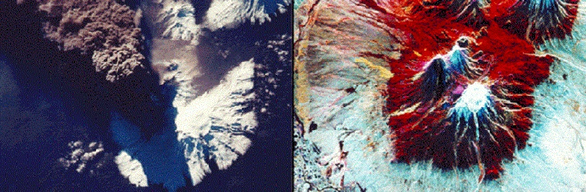
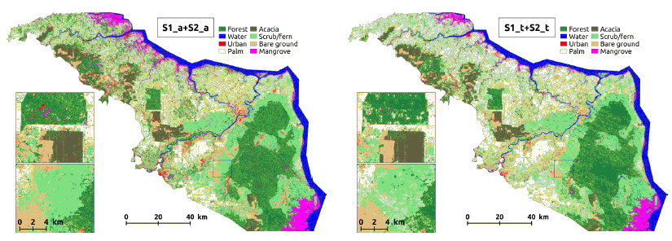

2 SAR Sensor
Slide: URL
2.1 Synthetic Aperture Radar (SAR)
Using radar over optical remote sensing
Advantanges
(+) Ability to capture data day or night
(+) See through clouds
(+) Weather independence by selecting proper frequency range
(+) Penetration through the vegetation canopy and the soil
(+/-) Sensitivity to structure
Disadvantanges
(-) Information content is different than optical and sometimes difficult to interpret
- Variable resolution is 1 to 100 m
2.2 Radar VS. Optical: Optimising satellite use in land cover classification
 An optical image of Kliuchevskoi volcano on the left, with a radar image on the right (Image credit: Michigan Tech Volcanology, Image Cropped)

Comparison of land cover classification results using a temporal average (left) and time series (right) of a combination of optical and radar images (Image Credit: Lopes et al., 2020)
The categorization accuracy was tested using the so-called Kappa-coefficient. According to their findings, classifications based on radar time series were more accurate than those based on optical time series. However, more precise findings may not always result in better maps. Therefore, while examining maps, the possibility of inaccuracies caused by the similarity of categories in optical or radar data should be considered.